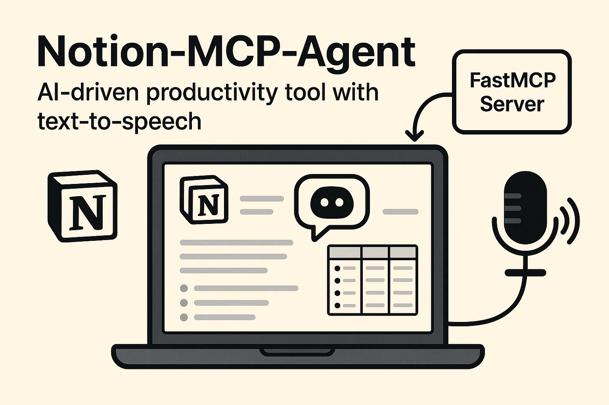
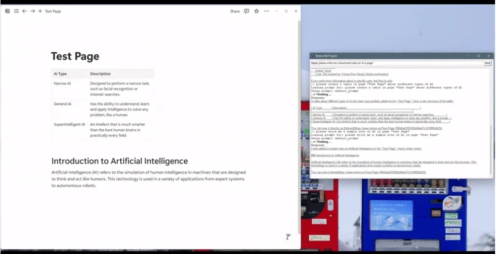

FastMCP as the tool layer
Every Notion verb (create, append, query, schema) is a typed MCP tool.
Live knowledge hub over Notion

Agents & automation / Notion MCP AgentNotion MCP Agent turns a Notion workspace into a live, AI-driven knowledge hub with one-click text-to-speech. A FastMCP server exposes a toolbox for manipulating Notion pages; a LangChain agent with GPT-4o orchestrates conversations to read, write, summarise, build tables, manage metadata, and generate MP3s of notes in real time. It runs over SSE transport with a Tkinter desktop GUI, and can run local-first with Ollama LLMs and Coqui TTS at zero cloud cost.
Notion is the centre of gravity for personal and team knowledge — but interacting with it through chat usually means dumb question-answering. The agent should be able to *do* things, not just describe them.
Every Notion verb (create, append, query, schema) is a typed MCP tool.
GPT-4o reasons over the workspace and chains tool calls.
Spoken summaries of meeting notes, journals, and PRs as MP3.
Question or command entered in the Tkinter GUI.
LangChain agent decides which MCP tools to invoke (chain-of-thought shown in dev mode).
Server hits the Notion API and/or Coqui TTS over SSE.
Answer streamed back, plus an MP3 link when TTS is used.
Change appears instantly in the Notion workspace and desktop chat window.
Append blocks, build tables, rename pages, manage users, search.
Any content becomes a downloadable MP3 via Coqui TTS.
Generates ten-section pedagogical study guides.
Conversations run over SSE transport on an /sse endpoint.
Works offline with local LLMs.
New MCP tools can be added without touching core logic.
Explore the material
behind the project.
Presentations, research, and supporting material from the project repository, alongside the original project media.
Read the project overview, setup notes, and technical documentation.
1 images
Select an image to explore.

Have an idea, a challenge, or a different perspective?
I’d love to hear it.
{kind=link}